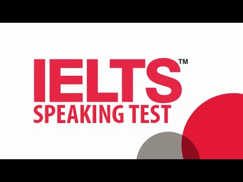

যে কোন ভাষায় যোগাযোগের জন্য সে ভাষায় সঠিক ভাবে কথা বলতে পারা খুব গুরুত্বপূর্ণ। তাই শুধু পরীক্ষায় ভালো স্কোর করার উদ্দেশ্য পোষণ না করে সামগ্রিকভাবে ভালো দক্ষতা অর্জন করার নিমিত্তে নিজেকে নিয়োজিত করা উচিত। ভালো দক্ষতা তৈরি করা গেলে ভালো স্কোর করা খুব একটা কঠিন কাজ না।
লিসেনিং টেস্টের পর এই স্পিকিং টেস্ট ভালো একটি আইইএলটিএস স্কোরে সব থেকে বেশি অবদান রাখে। স্বল্প সময়ের এই মৌখিক পরীক্ষাটিতে খুব সহজেই ভালো একটি ব্যান্ড স্কোর করা সম্ভব। তার জন্য প্রয়োজন হয় অনেকখানি প্র্যাকটিস আর একটু খানি মেন্টাল ট্রেইনিং এর ।
শুরুতে এই পরীক্ষা সম্পর্কে কিছু তথ্য দেওয়া যাক। স্পিকিং মডিউল টেস্ট বাকি তিনটি মডিউলের পরীক্ষার দিনের ৩ দিন আগে থেকে ৩ দিন পরের যে কোন সময়ে হতে পারে। এমনকি সকালে লিসেনিং, রিডিং, রাইটিং পরীক্ষা থাকলে সেদিন বিকালেও আপনার পরীক্ষার সময় নির্ধারিত হতে পারে। যে সেন্টারে আমি পরীক্ষা দিয়েছিলাম সেখানে রাত ৯:২০ মিনিটে একজনের স্পিকিং টেস্টের সময় নির্ধারিত হয়ে ছিল। তবে এ নিয়ে চিন্তার কিছু নেই। অন্তত এক সপ্তাহ আগে আপনাকে পুর্নাঙ্গ শিডিউল ই- মেইলের মাধ্যমে জানিয়ে দেওয়া হবে। তাই মানসিক ভাবে প্রস্তুত হওয়ার পর্যাপ্ত সময় হাতে থাকবে। আর তাছাড়া ই-মেইলে পরীক্ষার এক্স্যাক্ট সময় জানিয়ে দেওয়া হয়। নির্ধারিত সময়ের ৩০ মিনিট আগে উপস্থিত থাকলেই হয়। অনেক আগে যেয়ে অপেক্ষা করার বিষয় থাকে না।

এটা বলার অবকাশ রাখে না যে এটি একটি মৌখিক পরীক্ষা। ইন্টারভিউ সিস্টেমে পরীক্ষাটি নেওয়া হয়। ব্রিটিশ কাউন্সিল স্বীকৃত কোন একজন পরীক্ষক সমগ্র পরীক্ষাটি সম্পন্ন করে থাকেন। এই পরীক্ষক হতে পারেন বাঙালি, আবার হতে পারেন অবাঙালি। যে কোন ইন্টারভিউ এর পারফরমেন্স পরিক্ষকের উপর বেশ খানিকটা নির্ভরশীল। স্পিকিং মডিউল টেস্টও তার ব্যতিক্রম নয়। ভালো একজন পরীক্ষক যেমন আপনাকে ভালো পারফরমেন্স করতে উদ্বুদ্ধ করতে পারেন যা কিনা আপনার স্কোর বাড়াতে বেশ ভালো ভূমিকা রাখবে, আবার একটু কড়া পরীক্ষক আপনার খারাপ পারফরমেন্সের কারন হয়ে দাড়াতে পারেন। তবে আত্মবিশ্বাস ভালো থাকলে পরীক্ষক কোন সমস্যা তৈরি করতে পারেন না।
স্পিকিং মডিউল টেস্টের ব্যাপ্তিকাল ১১-১৪ মিনিট । পরীক্ষা রুমে ঢোকার পর পরীক্ষক বেসিক ইন্ট্রডাকশন দেবেন। আপনার সাথে পরিচিত হবেন। তার নিজের নাম বলবেন। এরপর আপনার পাসপোর্ট দেখতে চাইবেন। এই অংশ টুকু পরীক্ষার অন্তর্ভুক্ত নয়। তাই এই সময়ে কি বলছেন , তা মার্কিং এর আওতাভুক্ত হবে না। তবে ফার্স্ট ইম্প্রেশন বলে একটা ব্যাপার আছে। সেই ফার্স্ট ইম্প্রেশনটা এই সময়েই তৈরি হয়ে যায়। তাই চেষ্টা করুন এই অংশটুকুও সিরিয়াসলি নেওয়ার।
আপনার পুরো পরীক্ষা সময়টি একটি রেকর্ডারে রেকর্ড কড়া হবে। পরীক্ষক আপনার পরীক্ষা আই ডি, নাম, তার নিজের নাম, পরীক্ষক আই ডি ইত্যাদি তথ্য দিয়ে রেকর্ডার চালু করবেন এবং একই সাথে একটি স্টপ- ওয়াচ চালু করবেন। এখান থেকে আপনার পরীক্ষা শুরু হবে।
স্পিকিং মডিউল টেস্টটি তিনটি অংশে বিভক্ত হয়ে থাকে। প্রথম অংশ সাধারণত ৪-৫ মিনিটের হয়। এই অংশে খুব সাধারণ কথাবার্তা হয়। আপনার নিজের সম্পর্কে জানতে চাওয়া হয়, আপনার পছন্দ- অপছন্দ, ফ্যামিলি, জন্মস্থান, ছেলেবেলার স্মৃতি ইত্যাদি নিয়ে জিজ্ঞাসা করা হয়। মোটের উপর বলতে গেলে ক্লাস ৪,৫ এ থাকতে যে বিষয়গুলোর উপর প্যারাগ্রাফ লিখতে হত, সেই বিষয়গুলো নিয়ে এখানে কথাবার্তা বলা হয় । এই অংশের একটি বিশেষত্ব হল খুব দ্রুত প্রশ্নের টপিক পরিবর্তন করা হয়। এবং এই পরিবর্তন এমন অদ্ভুত ভাবে হয় যে অনেক সময়েই মাথায় কোন উত্তর আসে না। ধরা যাক, কথা হচ্ছে আপনার পছন্দের খাবার নিয়ে। হঠাৎ করে হয়ত জিজ্ঞাসা করা হবে আপনার রুমের জানালার ভিউ কেমন। হুট করে এই টপিক ট্রান্সফরমেশন এর ব্যাপারটা বেশ গুরুত্বপূর্ণ। অনেক সময় ব্রেইন ব্ল্যাক আউট হয়ে যায় । ফলে উত্তর মনমত গুছিয়ে দেওয়া সম্ভব হয় না যা কিনা ব্যান্ড স্কোরে বিরুপ প্রভাব ফেলে।
আইইএলটিএস স্পিকিং পরীক্ষায় এক শব্দে (যেমন, ইয়েস, নো, ওকে) বা এক বাক্যে উত্তর দেওয়া থেকে বিরত থাকুন। যতটা সম্ভব উত্তর বিস্তৃত (এলাবরেট) করার চেষ্টা করুন। তবে মূল প্রশ্ন থেকে সরে যেয়ে অযথা কথা বলবেন না একদমই। এটা বেশ ভয়াবহ একটা ব্যাপার। এতে ব্যান্ড স্কোর খুব দ্রুত গতিতে নেমে আসে। আবার কুমিরের খাজকাটা গল্পের মত একই কথা বার বার বলবেন না। চেষ্টা করুন আপনার এক্সামিনারকে প্রশ্ন করার সুযোগ না দেওয়ার । যেন তিনি প্রশ্ন করার আগেই আপনার উত্তর চলে আসে। বেশি বেশি প্র্যাকটিস করলে আপনি প্রশ্নের ধরন বুঝে ফেলবেন। তখন কি বলতে হবে তাও বুঝতে পারবেন। তাই বেশি বেশি প্র্যাকটিস করুন। প্রশ্নের উত্তর এক কথায় শেষ করে চুপ করে থাকবেন না। মনে রাখবেন, আপনি ইংরেজিতে কতটুকু ভালো কথা বলতে পারেন, এটি তার পরীক্ষা। তাই একটি প্রশ্নের উত্তর পরবর্তী প্রশ্ন করা পর্যন্ত দিতে থাকুন। তবে চিন্তার কিছু নেই। পরীক্ষক আপনার সাথে শত্রুতা করে অনেকক্ষন ধরে একটি প্রশ্নের উত্তর শুনবেন না। কারন তাকেও সময়ের মধ্যে শেষ করতে হবে। তাই তিনিই আপনাকে থামিয়ে পরবর্তী প্রশ্ন করবেন।
এই প্রথম অংশটি বাকি দুইটি অংশ অপেক্ষা সহজ। তাই এক্সামিনারকে একটু বাধ্য করুন এখানে একটু বেশি সময় নিতে। নির্ধারিত সময়ের বাইরে অতিরিক্ত ১-২ মিনিট এখানে ব্যয় করতে পারলে আপনারই লাভ। পার্ট ৩ এ কম সময় পাবেন। সময় একটু বেশি খরচ করার কিছু নিঞ্জা টেকনিক আছে। যেমন আপনার কথা বলার মোশন। খুব দ্রুত কথা বলবেন না। একটু ধীরে বলুন। তারা হুড়ো করবেন না। উত্তেজনার বশবর্তী হয়ে আমরা দ্রুত কথা বলতে শুরু করি , যা থেকে বিরত থাকা বাঞ্ছনীয়। একটু ধীরে কথা বললে যেমন উত্তরে ফোকাস করা সম্ভব হয়, তেমন একটু সময়ক্ষেপণ করা যায়। আবার , একটু চিন্তা করার অভিনয় করুন। কোন প্রশ্নের উত্তর দেওয়ার আগে , “লেট মি থিঙ্ক,আই হ্যাভ নেভার গিভেন ইট অ্যা থট ”, “দ্যাটস অ্যা ট্রিকি কোশ্চেন, লেট মি থিংক” এমন কিছু কথা বলে একটু চিন্তা করুন, চিন্তা করার প্রয়োজন না হলে একটু অভিনয় করুন। তবে এই কাজ বার বার করবেন না, তাতে এক্সামিনার আপনার চালাকি ধরে ফেলবেন এবং বলা বাহুল্য আপনার ব্যান্ড স্কোর এতে বেশ ক্ষতিগ্রস্থ হবে ।
এই অংশ শেষ করে এক্সামিনার আপনাকে জানাবেন যে পার্ট ১ শেষ। পার্ট ২ কে বলা হয় “কিউ কার্ড সেশন”। এই অংশে আপনাকে বেশ কিছু টপিকের মধ্যে থেকে র্যানডমলি একটি টপিক বাছাই করতে হবে। এই টপিকের উপর আপনাকে এক নাগাড়ে ২-৩ মিনিট কথা বলতে হবে। প্রস্তুতি নেওয়ার জন্য আপনাকে ১ মিনিট সময় দেওয়া হবে। এই সময়ে নোট নেওয়ার জন্য আপনাকে একটি পেন্সিল, এক টুকরো কাগজ দেওয়া হবে। কথা বলার সময় এই নোট দেখে কথা বলতে পারবেন। অনেকে যে ভুল কাজটি করে তা হল বড় বড় বাক্য লেখা শুরু করে। ভেবে দেখুন ১ মিনিটে আপনি বড়জোর ২-৩ টি বাক্য লিখতে পারবেন যা বলতে আপনার ১০ সেকেন্দের বেশি লাগবে না। তাহলে বাকি সময় শেষ করা আপনার জন্যে মুশকিল হয়ে পড়বে। তাই ভালো উপায় হল কি- ওয়ার্ড লেখা। আবার অনেকে কিছু প্রাসঙ্গিক শব্দ লিখতে বলেন যেগুলো কথার মাঝে ব্যবহার করবেন। কিউ কার্ড টপিকের সাথে কিছু প্রশ্ন থাকে। নির্দেশনায় বলা থাকে কথার মাঝে ঐ প্রশ্ন গুলোর উত্তরও দিয়ে দেওয়ার জন্য। চেষ্টা করুন সমস্ত প্রশ্নের উত্তর কাভার করতে। “কিউ কার্ড” সেশনের প্রশ্নের অনেক স্যাম্পল গুগলে পেয়ে যাবেন। তবুও বোঝার স্বার্থে আমি এখানে একটি স্যাম্পল প্রশ্ন দিয়ে দিচ্ছি।
Describe an important event in your life.
You should say:
1) When it happened
2) Who you were with
3) What happened
And explain why you feel it was important.
বর্তমান সময়ের কিউ কার্ডের টপিকগুলো বেশ ভিন্নরকম হয়। ক্যামব্রিজ আইইএলটিএস বইয়ের প্রশ্ন গুলো বেশ সহজ। এই তুলনায় বর্তমান সময়ের টপিকগুলো একটু অদ্ভুত। আমার কিউ কার্ড টপিকটি ছিল এরকম, “Describe a time when u decided not to tell the truth to your best friend”-_- । এমন একটি কিউ কার্ড দেখে ঘাবড়ে যাওয়াটাই স্বাভাবিক। তাই চেষ্টা করবেন প্রস্তুতির সময়টুকু ভালো ভাবে কাজে লাগানোর। আমি নিজে এই কাজে ব্যর্থ হয়েছিলাম। সম্পূর্ণ সময় শেষ হওয়ার আগেই থেমে গেলে এক্সামিনারকে কিছু প্রশ্ন করে আপনার থেকে উত্তর বের করে এনে সময়টুকু পূরণ করতে হয়। এই কাজ পরিক্ষকের মনে বিরক্তির উদ্রেক করতেই পারে। তাই চেষ্টা করুন সম্পূর্ণ সময় কথা বলার।
আর একটি কথা, আইইএলটিএস স্পিকিং টেস্ট আপনার কথা বলার দক্ষতা যাচাই। আপনার জ্ঞান যাচাই নয়। তাই অকাট্য ভুল তথ্য দেওয়া এড়িয়ে যা ইচ্ছা তাই বলতে পারেন। আপনি যদি বলেন আপনি একজন বিলিওনেয়ার। আপনার বি এম ডব্লিউ, আউডি, মার্সিডিজ আছে। বলতে পারেন। আবার মন চাইলে আপনি আপনার বিচ হাউজ বাংলোর গাল গপ্পো দিতে পারেন। আপনার কল্পনার রাজ্যে যা কিছু এতদিন ভেবে রেখেছিলেন, এক্সামিনারকে সব জানিয়ে দিন । তবে যে কোন কিছুর বাড়াবাড়ি ভালো ফল বয়ে আনে না। তাই লিমিটের মাঝে থাকুন। উদাহরণস্বরূপ, আমার কিউ কার্ডের কথা বলি। আমার টপিকের উপর কি বলব এমন কিছু আমি খুজে পাচ্ছিলাম না। তাই আমি মনে মনে গল্প তৈরি করলাম। এক্সামিনারকে বললাম , “আমি পরীক্ষায় ফেইল করছিলাম, লজ্জায় আমার বেস্ট ফ্রেন্ডকে জানাই নাই। সে জিজ্ঞাসা করলে বলছি যে পাস করছি।” এভাবে আপনি চাইলে উত্তর বানাতে পারেন। তথ্যগত ত্রুটি কেউ যাচাই করতে যাবে না। তবে “বাংলাদেশের রাজধানি সিলেট’ – এমন ভুল করবেন না।
পার্ট ৩ অনেকটা পার্ট ১ এর মতই। এখানে আপনার কিউ কার্ড সম্পর্কিত বিভিন্ন প্রশ্ন করা হবে। তবে পার্ট ১ এর সাথে এর মূল পার্থক্য হল এর প্রশ্নের কোয়ালিটিতে। পার্ট ১ এর প্রশ্ন গুলো একটু ব্যক্তিকেন্দ্রিক, সেখানে পার্ট ৩ এর প্রশ্নগুলো কিউ কার্ডকেন্দ্রিক। অবশ্য শুধু যে কিউ কার্ড কেন্দ্রিক প্রশ্নই করা হয়, ব্যাপারটি এমন নয়। এর বিষয়ের সাথে সংশ্লিষ্ট অন্যান্য প্রশ্নও করা হতে পারে। তবে এই অংশের প্রশ্নগুলো একটু ভেবে চিন্তে উত্তর দেওয়া লাগে। অনেকটা উচ্চতর দক্ষতামূলক প্রশ্ন এখানে করা হয়। কোন বিষয়ের উপর আপনি কি চিন্তা করেন, অথবা আপনার মতামত কি- এই জাতীয় প্রশ্ন এখানে করা হয়। পার্ট ১ এর মত এখানেও উত্তরগুলোকে এক্সটেন্ড করুন। নিজের দাবির স্বপক্ষে যুক্তি দেওয়ার চেষ্টা করুন। উদাহরণ দিয়ে বুঝানোর চেষ্টা করা খুব ভালো একটা বুদ্ধি। যে কোন প্রশ্নকে নিজের লাইফের সাথে, লাইফের কোন ঘটনার সাথে কানেক্ট করে রেফারেন্স হিসেবে ব্যবহার করার চেষ্টা করুন। এই জিনিস গুলো আপনার উত্তরের মান বৃদ্ধি করবে।
পরীক্ষার সম্পূর্ণ সময়টুকু একই টোনে (মনোটনিক) কথা বলবেন না। অনেকটা রোবটিক শোনাবে আপনার কথা। কথার টোনে ভ্যারিয়েশন আনুন। টোনে আপস এন্ড ডাউন্স আনুন। কথার মাঝে একটু ইমোশন আনার ট্রাই করুন। যেখানে হ্যাপিনেসের কথা বলছেন , সেই হ্যাপিনেস আপনার বডি লেঙ্গুয়েজ, জেসচার, পসচারের মধ্যে আনার চেষ্টা করুন। অবাক হওয়ার কথা বললে একটু অবাক হওয়ার ভঙ্গি করুন। এতে করে আপনার কথা অনেক শ্রুতিমধুর হবে। শুনতে ভালো লাগবে। এক্সামিনার মুগ্ধ হবে। তবে সমস্ত কিছুই লিমিটের মাঝে করবেন। উত্তেজনার আতিশয্য দেখাতে যেয়ে হাত-পা ছুড়ে নিজেকে বা এক্সামিনারকে আহত করে বসবেন না । :D
কথা খুব দ্রুত বা খুব ধীরে বলবেন না। একটা মাঝারি পেস মেইনটেইন করুন। আবার খুব জোরে বা খুব আস্তে কথা বলবেন না। এক্সামিনার যেন শুনতে পান – এটা নিশ্চিত করে মাঝারি গলায় কথা বলুন। উচ্চারনকে খুব গুরুত্ব দিন। কারন উচ্চারনের উপর আলাদা মার্ক থাকে। তবে বাচনভঙ্গি (আকসেন্ট) নিয়ে চিন্তিত হওয়ার কিছু নেই। সমগ্র বিশ্বে একটি নির্দিষ্ট দুরত্ব পর পর মানুষের বাচনভঙ্গিতে ভিন্নতা পরিলক্ষিত হয়। তাই বাচনভঙ্গি ভিন্ন রকম হলেও ক্ষতি নেই।
আরো বেশ কিছু ব্যাপার আছে যেগুলো অবশ্য পরিহার্য। যেমন, এক্সামিনারকে ইম্প্রেস করতে যেয়ে তাকে কমপ্লিমেন্ট দিয়ে বসবেন না। একটু কমফোর্টেবল এনভাইরনমেন্ট তৈরি করার জন্য বড় জোর তাকে ভদ্র- মার্জিত ভাবে একটু হেসে, “ইউ লুক নাইস” বলতে পারেন। কিন্তু আবারো বলছি তার সাথে ফ্লার্ট করার ট্রাই করবেন না। হিতে বিপরীত হতে পারে। নিজেকে পরিপাটি করে প্রদর্শন করবেন। ফরমাল জামা কাপড় পড়তে হবে- এমন কোন বাধা ধরা নিয়ম নেই। তবে মার্জিত পোশাক আপনার আত্মবিশ্বাস বৃদ্ধি করবে। যেহেতু কথা বলার পরীক্ষা, ইউ মাস্ট ইগ্নর ব্যাড ব্রেদ। আপনার যদি কোন সমস্যা থাকে তাহলে আগেই সে অনুযায়ী ব্যবস্থা গ্রহণ করুন। Try to be smelt nice। এই সমস্ত ব্যাপার আপনার আত্ম বিশ্বাস বাড়াতে সাহায্য করবে।
পরীক্ষার বিষয়ে সমস্ত তথ্য দেওয়া শেষ। এবার আসি পরীক্ষার মার্কিং এর বিষয়ে। আইইএলটিএস স্পিকিং এর সব গুলো পার্টে ৪ টি বিষয়ের উপর মার্কিং করা হয়। ১) fluency & coherence ২) lexical resource ৩) Grammatical range & accuracy ৪) pronunciation । ফ্লুয়েন্সি হল আপনি বিনা বাধায় কতটা স্বচ্ছন্দ গতিতে কথা বলতে পারেন। কোহেরেন্স হল আপনার প্রদত্ত উত্তরের এক বাক্য থেকে পরের বাক্যের মাঝের সামঞ্জস্যতা । একটা কথা বলে হুট করে অন্য কথায় চলে যাওয়া একটি খারাপ দিক। বাক্যের পর বাক্য সামঞ্জস্যভাবে সাজিয়ে কথা বলাই মূলত কোহেরেন্স। লেক্সিকাল রিসোর্স হল আপনার উত্তরে সুন্দর, আননোন শব্দ ব্যবহার করার দক্ষতা। “The scenic beauty of Germany is nice” না বলে “the scenic beauty of Germany is mesmerizing ” বলা অনেক বেশি শ্রুতিমধুর এবং তা আপনার জ্ঞানের পরিচায়ক। গ্রামেটিকাল রেঞ্জ এন্ড আকুরেসি হল আপনি আপনার কথা বার্তায় কত বেশি ব্যাকরন সঠিকভাবে অনুসরণ করলেন- তার পরিমাপক। প্রোনান্সিয়েশন হল আপনার উচ্চারনভঙ্গি। মনে রাখতে হবে, বাচনভঙ্গি আর উচ্চারনভঙ্গি দুইটি ভিন্ন জিনিস। বাচনভঙ্গি ভিন্ন হতে পারে। কিন্তু উচ্চারনভঙ্গি ভিন্ন হবে না। আইইএলটিএস এর মার্কিং ক্রাইটেরিয়ার অফিসিয়াল নীতিমালা জনসাধারনের জন্য উন্মুক্ত করে দেওয়া আছে অনলাইনে। সেটি দেখার জন্য গুগলে “IELTS SPEAKING BAND SCORE DESCRIPTORS” লিখে সার্চ করলেই একটি পিডিএফ পেয়ে যাবেন।
এবার আসা যাক প্রস্তুতির বিষয়ে। স্পিকিং এর প্রস্তুতি নেওয়ার সব থেকে প্রধান অন্তরায় হচ্ছে নিজের মনের দ্বিধা-দ্বন্দ্ব, শঙ্কা, লজ্জা, ভয়। তাই কিছুদিনের জন্যে নিজেকে অপমান করার মানসিকতা তৈরি করুন। যারা আপনার ভুল, ভাঙ্গা ইংরেজি শুনে হাসবে, তাদেরকে হাসতে দিন। আপনার স্বপ্ন পুরনে তাদের অবদান অতটুকুই। ইংরেজি শুধু একটা ভাষা, যে ভাষায় বিশ্বের অনেক মানুষ কথা বলে। জিনিসটা এতো টুকুই। এর বেশি কিছু না। একে স্মার্টনেসের মানদণ্ড হিসেবে নেওয়া বন্ধ করুন। যারা এমনটা ভাবে তাদের থেকে দূরে থাকুন। ভালো একটি স্কোর করতে পারলে এরাই এসে আপনার কাছে পরামর্শ চাইবে। কারো সামনে ভুল-ভাল ইংরেজি বলতে লজ্জাবোধ করবেন না। এর পরেও যদি সমস্যা হয় তবে প্লে স্টোরে অনেক অ্যাপ পাবেন যেখানে বিশ্বের বিভিন্ন প্রান্তের আপনারই মত ভাঙ্গা ইংরেজি বলা মানুষের সাথে প্র্যাকটিস করতে পারবেন। যেহেতু তাদের আপনি চেনেন না, জানেন না, তাই লজ্জার ব্যাপার টা এখানে থাকবে না। একটু গুগল করলেই এমন আপ্লিকেশনের সন্ধান পেয়ে যাবেন। পারফেকশনিস্ট হতে চেষ্টা করবেন না। নেটিভ স্পিকার ছাড়া খুব অল্প মানুষই একদম শুদ্ধ ব্যাকরনে ইংরেজি বলতে পারে। ভেবে দেখুন, বাংলা আমাদের মাতৃভাষা। আমরা সেই ছোটকাল থেকে বাংলা ভাষা বলতে, পড়তে, লিখতে শিখছি। আমরাও কি বাংলা বলার সময় সম্পূর্ণ সঠিক ভাবে বাংলা বলতে পারি? উত্তর হল, না, পারি না। তাই নিজের থেকে শতভাগ শুদ্ধ ইংরেজি আশা করবেন না। এতে আপনার আত্মবিশ্বাস কমে যাবে।
আর একটি বিষয় আগের লিসেনিং আর্টিকেলে লিখেছি, সেটি হল, ইংলিশ মুভি- সিরিজ দেখে অভ্যস্ত মানুষ আইইএলটিএস এ একটু বেশি শুবিধা পাবে। স্পিকিং এর ক্ষেত্রেও কথাটি সত্য। হাতে সময় থাকলে বেশ কিছু মুভি- সিরিজ দেখতে পারেন। কারন ইংরেজি বেশি বেশি শুনলে বলার দক্ষতা তৈরি হয়। আবার বেশি বেশি ইংলিশ লেখা পড়লেও স্পিকিং এ কিছু অতিরিক্ত সুবিধা পাওয়া যায়। প্রশ্ন কাঠামো ধরে অনুশীলন করার জন্য ক্যামব্রিজ আইইএলটিএস ৬-১৪ খুব ভালো সোর্স হতে পারে। ইউটিউব এ বেশ কিছু চ্যানেল আছে যাদের তালিকা আমি ইতোমধ্যে আমার আগের লেখাগুলোতে দিয়েছি। এই চ্যানেলগুলা অনুসরণ করা যেতে পারে। আইইএলটিএস লিসেনিং একমাত্র মডিউল যার পরীক্ষার হুবহু স্যাম্পল ভিডিও অনলাইনে/ ইউটিউবে পাওয়া যায়। বিভিন্ন ব্যান্ড স্কোরের ভিডিও পাবেন আপনি এই সব জায়গায়। ব্যান্ড স্কোর ৭ এর এক্সাম স্যাম্পল, ব্যান্ড স্কোর ৮, ৯, ৬ এর এক্সাম স্যাম্পল এমনকি ৩,৪ ব্যান্ড স্কোর এক্সাম স্যাম্পলও পাওয়া যায়। এগুলো দেখে আপনি বুঝতে পারবেন, আপনার কাঙ্ক্ষিত স্কোর পেতে গেলে আপনার কি পরিমান দক্ষতা অর্জন করা প্রয়োজন।